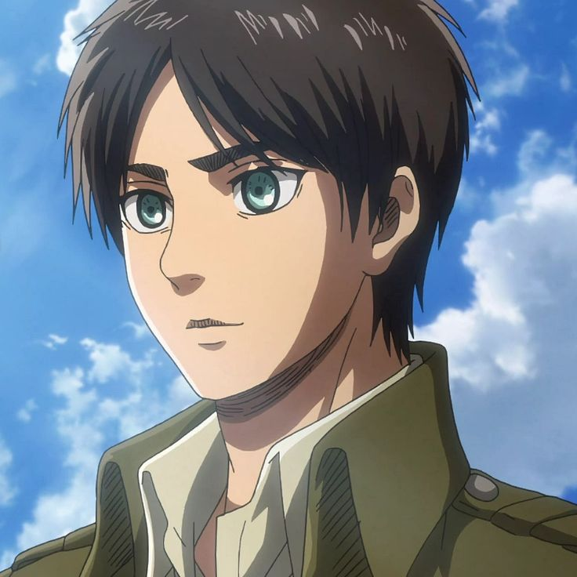
Eren Yeager
A jornada de Eren é ditada por um desejo visceral de liberdade que beira a obsessão. Quando criança, a destruição de seu lar e a perda brutal de sua mãe plantaram nele um ódio cego contra os Titãs, canalizado em um esforço militar implacável. No entanto, o peso da história se transforma quando ele descobre que carrega em si o power daquilo que mais odeia. À medida que os segredos do porão de seu pai são revelados, Eren deixa de ser apenas um jovem vingativo para se tornar uma figura complexa, fria e isolada, cujas escolhas extremas testam os limites da moralidade na tentativa de garantir o futuro de seu povo, custe o que custar.
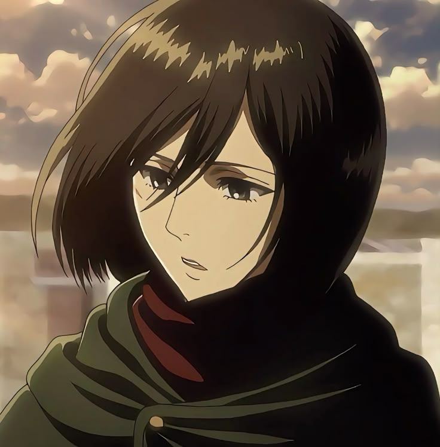
Mikasa Ackerman
Marcada pelo trauma de ver seus pais biológicos assassinados na infância, Mikasa encontrou na família Yeager um recomeço e, em Eren, sua principal âncora no mundo. Essa ligação moldou sua personalidade, tornando-a uma soldada de elite incrivelmente talentosa, focada quase que exclusivamente em manter Eren vivo em meio ao caos das batalhas. Ao longo dos anos, sua trajetória deixa de ser apenas sobre proteção física e passa a ser um doloroso processo de amadurecimento emocional, onde ela precisa conciliar seu amor e lealdade inabaláveis com a necessidade de agir por conta própria quando o mundo ao seu redor começa a desmoronar.
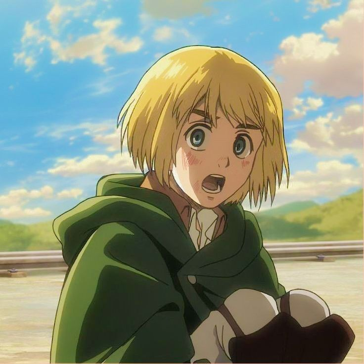
Armin Arlert
Diferente de seus amigos de infância, Armin nunca teve aptidão para o combate físico e sofria com a falta de autoconfiança no início de sua carreira militar. Seu verdadeiro valor reside em sua mente analítica e em seu idealismo genuíno de ver o mar e o mundo além dos muros. Ele rapidamente se torna o cérebro por trás das estratégias de sobrevivência mais desesperadas da Divisão de Reconhecimento. Conforme a guerra avança e as decisões se tornam mais sangrentas, Armin é forçado a abandonar parte de sua inocência e a tomar decisões de vida ou morte, herdando responsabilidades imensas e lidando com o peso de ter sobrevivido às custas de outros sacrifícios.
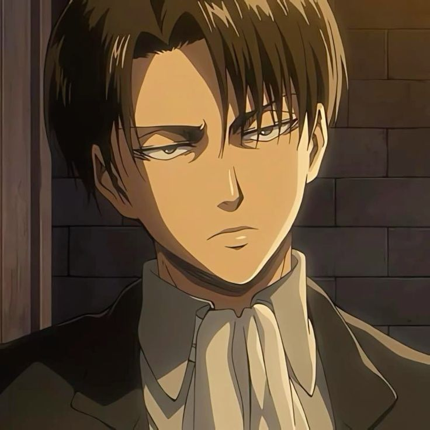
Levi Ackerman
Criado no submundo criminoso da capital antes de ser recrutado pela Divisão de Reconhecimento, Levi carrega uma postura fria, obsessão por limpeza e uma habilidade de combate que o consagrou como o soldado mais forte da humanidade. Ele não é movido por discursos ideológicos, mas sim por um senso pragmático de dever e pelo respeito profundo à memória dos soldados que caíram sob seu comando. Atrás da fachada implacável e violenta, Levi é um homem profundamente marcado pelo luto constante, cuja principal missão se torna honrar as últimas ordens de seus superiores e proteger a nova geração.
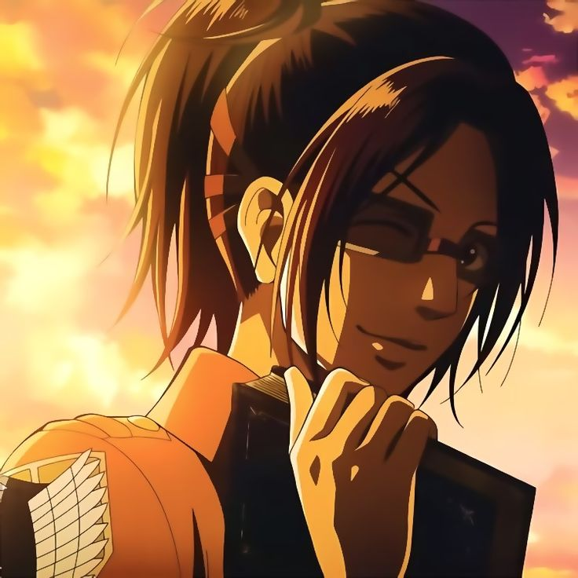
Hange Zoe
Hange quebra o clima sombrio do exército com uma personalidade excêntrica e uma curiosidade científica quase obsessiva pelos Titãs, tratando os monstros mais como objetos de estudo fascinantes do que como inimigos. Conforme os mistérios políticos e biológicos se aprofundam, sua inteligência se prova vital para o desenvolvimento de novas tecnologias de combate. Quando a liderança da divisão cai inesperadamente em suas mãos, a leveza dá lugar ao peso esmagador da responsabilidade política e militar, forçando Hange a lidar com a frustração de buscar soluções pacíficas em um mundo que ruma rapidamente para a destruição total.
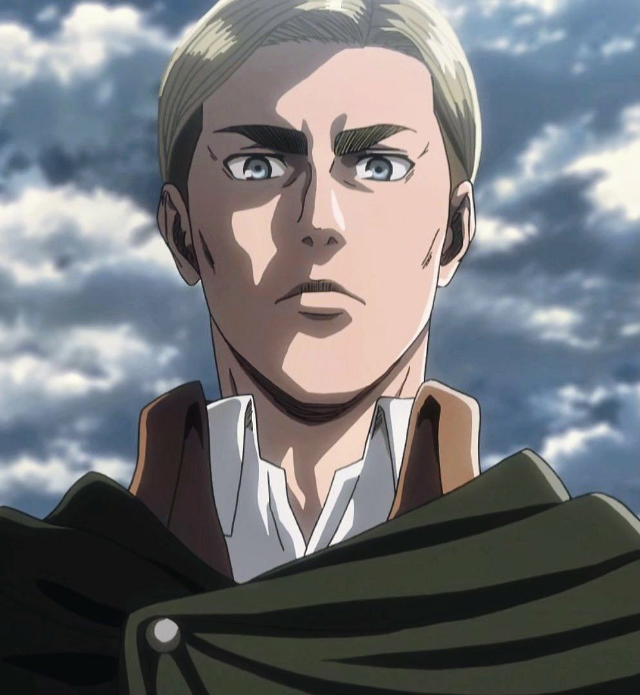
Erwin Smith
Como o 13º Comandante da Divisão de Reconhecimento, Erwin é uma figura imponente, cujos discursos conseguem guiar soldados diretamente para a morte em nome da humanidade. Ele possui uma mente tática brilhante e fria, capaz de apostar a vida de centenas de pessoas, inclusive a sua própria, em planos arriscados para obter vantagens contra os Titãs. Contudo, seu verdadeiro motor é um desejo profundamente pessoal e quase egoísta de provar que as teorias de seu falecido pai sobre a verdade do mundo estavam corretas, criando um conflito interno doloroso entre seu sonho pessoal e seu papel como líder.
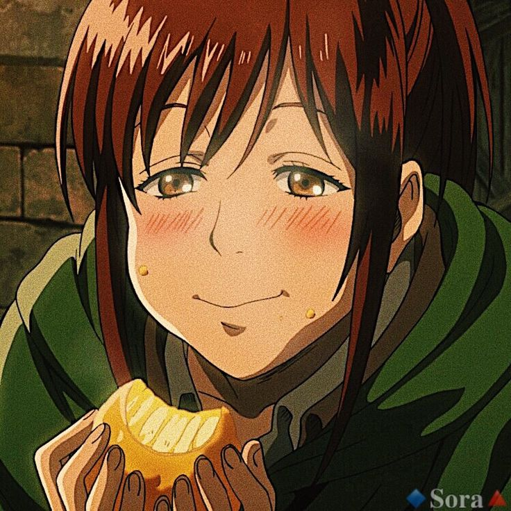
Sasha Braus
Vinda de uma comunidade tradicional de caçadores nas montanhas, Sasha inicialmente se choca com a rigidez militar, usando seu apetite insaciável por comida como uma válvula de escape para o estresse e o medo. Por trás dos momentos cômicos, no entanto, esconde-se uma soldada de instintos afiados, excelente audição e uma pontaria impecável com o arco e flecha e o rifle. Sua trajetória mostra o desabrochar de uma garota egoísta em uma mulher corajosa que arrisca a própria vida para salvar estranhos, tornando-se o coração e o símbolo de humanidade para o seu esquadrão.
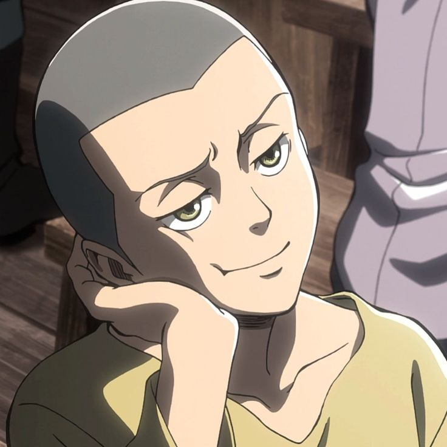
Connie Springer
Connie é a personificação da lealdade e do companheirismo simples, tendo entrado para o exército com o objetivo bobo de dar orgulho para sua pequena vila. Essa leveza é arrancada dele quando a guerra bate diretamente à sua porta, trazendo uma tragédia familiar bizarra que molda seu arco a partir da segunda temporada. Diante de traições e perdas constantes, ele passa por crises profundas de revolta e desespero, mas escolhe canalizar sua dor no apoio mútuo aos sobreviventes de sua turma, agarrando-se à humanidade que ainda lhe resta.
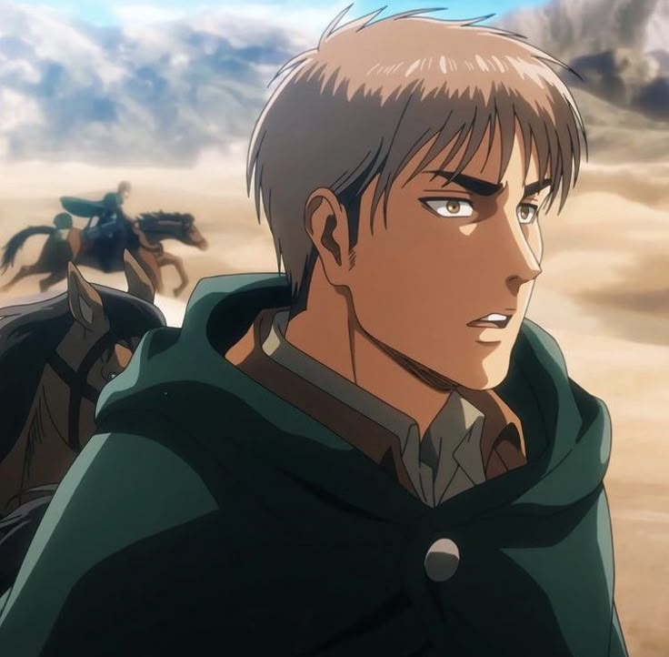
Jean Kirstein
Jean começa a história como o realista — ou cínico — do grupo, focado apenas em conseguir uma vaga confortável na Polícia Militar para viver em segurança. No entanto, a dura realidade do combate e a perda precoce de amigos despertam nele um forte senso de dever e empatia. Ele se desenvolve como um líder nato justamente por entender o medo humano e não se ver como um herói intocável. Sua evolução reflete o conflito de um homem comum que, mesmo preferindo uma vida pacífica, escolhe repetidamente a linha de frente por não conseguir dar as costas à injustiça e aos seus companheiros.
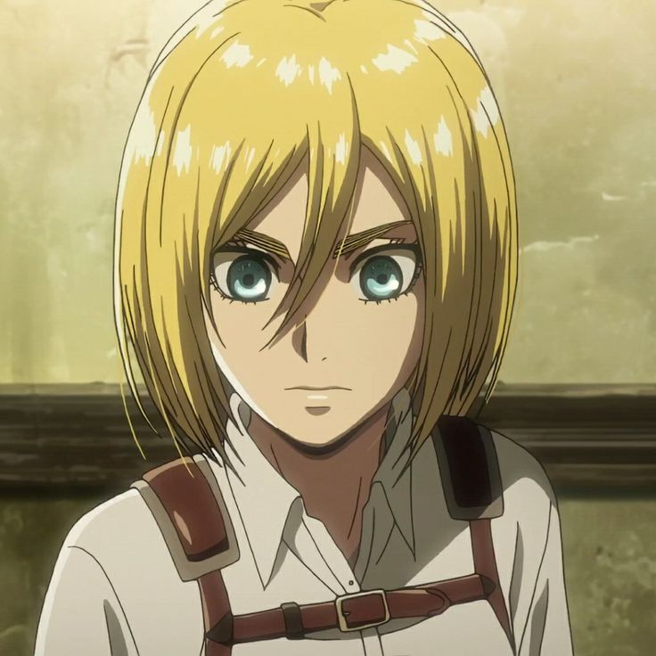
Historia Reiss
Longe de ser apenas mais uma família de aristocratas mimados, os Reiss são o verdadeiro centro de poder e o maior segredo político de toda a sociedade das muralhas. Eles guardam o sangue real e o poder do Titã Fundador como uma herança maldita, passada de geração em geração em rituais subterrâneos macabros. O grande drama da família é que qualquer membro que herde o poder principal acaba sendo possuído por uma ideologia pacifista cega do primeiro rei, sendo forçado a manter o resto da humanidade ignorante e trancada. É uma dinastia construída sobre hipocrisia, lavagem cerebral e sacrifícios familiares, onde manter as aparências e o controle vale muito mais do que a vida dos seus súditos.
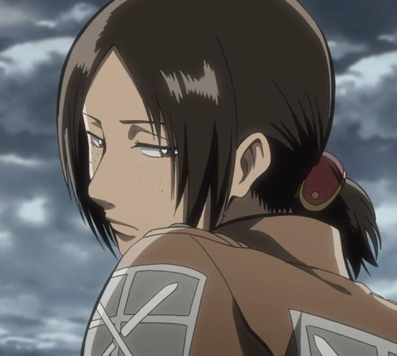
Ymir
Ela se projeta como uma mulher fria, egoísta e que não dá a mínima para os outros, mas essa pose é só uma armadura para esconder as cicatrizes de um passado brutal. Fora das muralhas, Ymir foi usada como bode expiatório por um culto religioso, castigada e largada para vagar como um monstro sem mente por sessenta anos. Quando o destino a fez voltar a ser humana por puro acidente, ela colocou na cabeça que nunca mais mentiria para si mesma ou viveria para agradar os outros. Sua ligação com Historia Reiss é o coração da sua jornada: Ymir enxerga na garota o mesmo complexo de mártir que quase a destruiu no passado, e decide protegê-la a todo custo, mesmo que isso signifique abrir mão da sua própria liberdade.
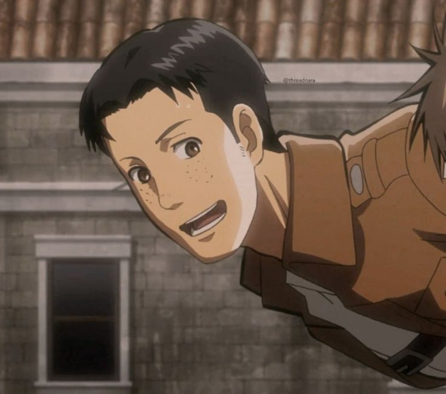
Marco Bodt
Apesar de sua participação curta, Marco deixou uma marca profunda na formação moral de seus colegas de turma, especialmente em Jean. Ele era um jovem idealista, talentoso e de temperamento pacífico, que genuinamente acreditava na estrutura do exército e no dever de proteger o rei. Sua habilidade de enxergar as fraquezas dos outros e transformá-las em pontos fortes fazia dele o líder ideal aos olhos de todos. Sua morte misteriosa e precoce durante a batalha de Trost serviu como o choque de realidade definitivo que mudou as prioridades de seus amigos mais próximos.
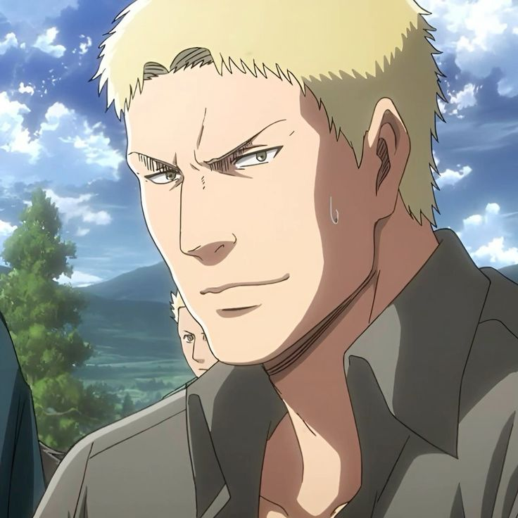
Reiner Braun
Reiner vive uma das trajetórias mais trágicas e psicologicamente devastadoras da obra. Introduzido como o "irmão mais velho" confiável e forte dos recrutas, ele esconde o peso de ser um guerreiro enviado de fora das muralhas com uma missão destrutiva. A pressão de viver anos fingindo ser o herói daqueles que deveria destruir acaba fragmentando sua mente, criando uma dupla personalidade severa que confunde seus deveres militares com sua afeição real pelos amigos da muralha. O resto de sua jornada é um retrato doloroso de culpa, estresse pós-traumático e uma busca desesperada por redenção.
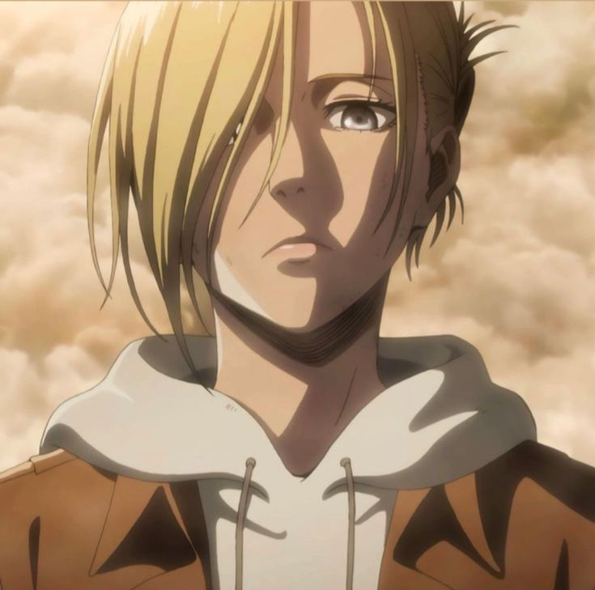
Annie Leonhardt
Annie é uma jovem solitária, fria e extremamente pragmática, cujo foco principal é sobreviver e cumprir sua missão para poder voltar para casa e reencontrar seu pai. Suas habilidades excepcionais em artes marciais e seu desapego aparente a tornam uma adversária formidável e uma infiltrada eficiente. No entanto, por baixo de sua armadura de indiferença, ela demonstra lampejos de hesitação e remorso ao ter que eliminar pessoas com quem conviveu, optando por se isolar emocional e fisicamente para não ser consumida pelo peso de suas próprias ações.
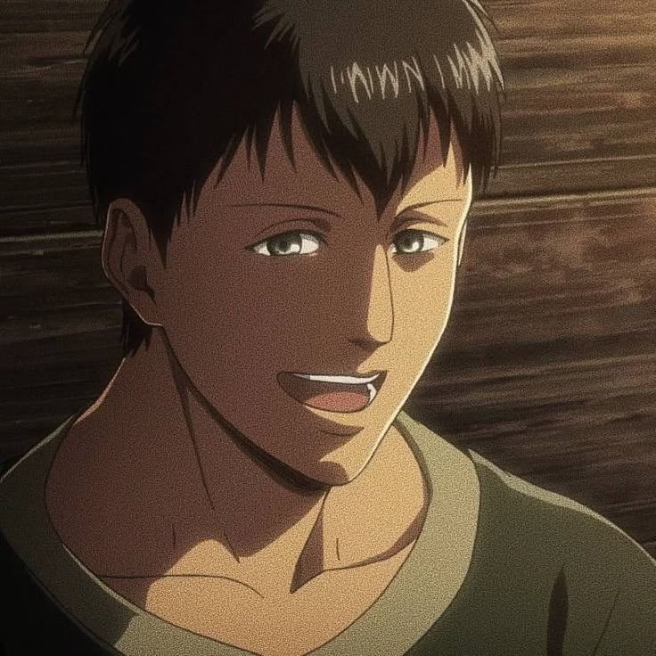
Bertholdt Hoover
Apesar de possuir um dos poderes mais destrutivos do mundo, Bertholdt é uma figura tímida, passiva e constantemente ansiosa, que prefere se misturar ao fundo e seguir a liderança de Reiner. Ele carrega uma melancolia profunda por entender perfeitamente a crueldade de suas ações e o fato de que as pessoas dentro das muralhas não são monstros, mas sim inocentes. Sua evolução culmina no momento em que ele aceita seu papel como um "guerreiro", deixando o medo de lado para cumprir seu dever com uma determinação fria e fatalista, aceitando o mundo cruel em que nasceu.
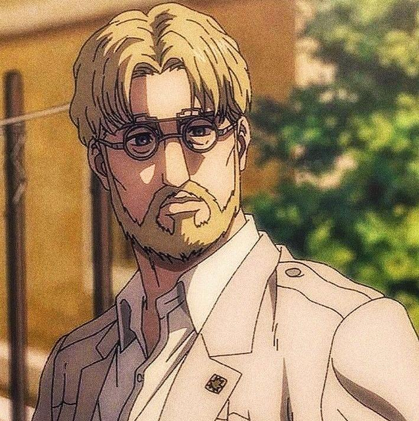
Zeke Yeager
Meio-irmão de Eren, Zeke surge originalmente como uma ameaça enigmática e brutal vinda de fora. Embala a guerra com uma frieza quase lúdica, mas esconde uma mente brilhante de estrategista político e militar. Criado sob a pressão de expectativas familiares extremas e traumas de infância, Zeke desenvolveu uma filosofia niilista e controversa sobre o sofrimento de seu próprio povo. Ele opera nas sombras de ambos os lados do conflito, manipulando nações e aliados para alcançar um plano de escala global que, em sua visão, é a única salvação pacífica para acabar com o ciclo de ódio no mundo.
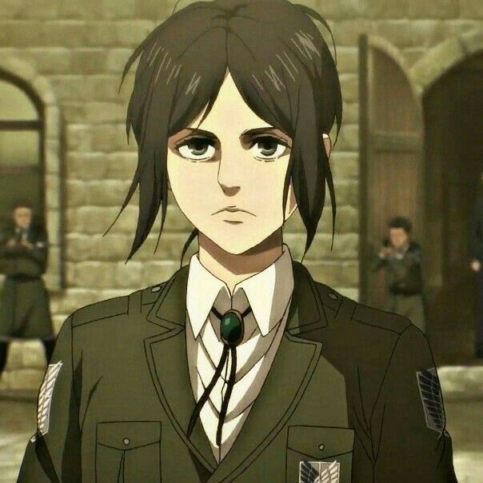
Pieck Finger
Pieck compensa as desvantagens físicas de seu poder de Titã — que a obriga a passar longos períodos de quatro patas — com uma inteligência dedutiva extraordinária e uma calma imperturbável sob pressão. Ela atua como a base logística e estratégica de seu grupo, sempre atenta aos detalhes que os outros deixam passar. Pieck não luta por ideologias cegas ou fanatismo nacionalista; sua lealdade está firmemente ancorada em seus companheiros de armas e no desejo de garantir um futuro seguro para sua família e seu povo marginalizado.
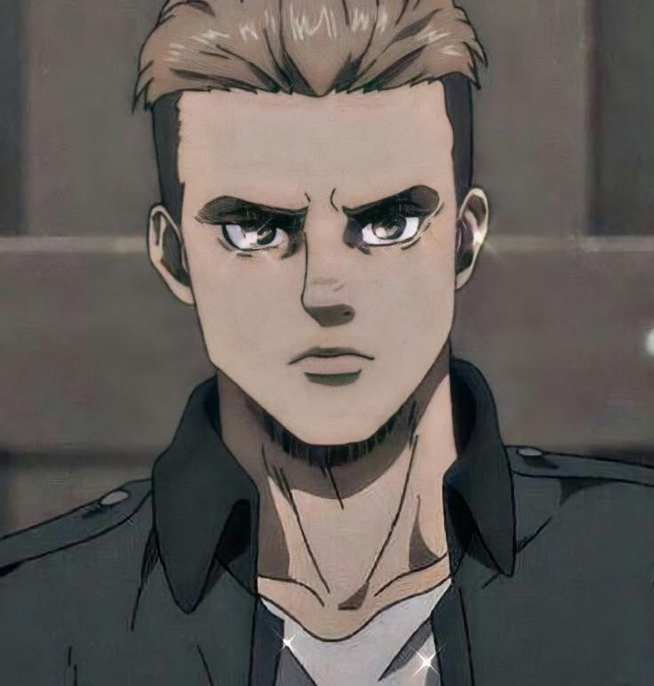
Porco Galliard
Galliard é um guerreiro orgulhoso, corajoso e de temperamento explosivo, cujas ações são fortemente moldadas pelo complexo de inferioridade e pela perda de seu irmão mais velho. Ele guarda um ressentimento profundo em relação a Reiner, sentindo que deveria ter sido escolhido em seu lugar anos atrás. No campo de batalha, ele é impetuoso e direto, utilizando sua velocidade impressionante para desestabilizar inimigos, mas sua jornada é marcada pela busca constante de provar seu valor e proteger a nova geração de recrutas de seu país.
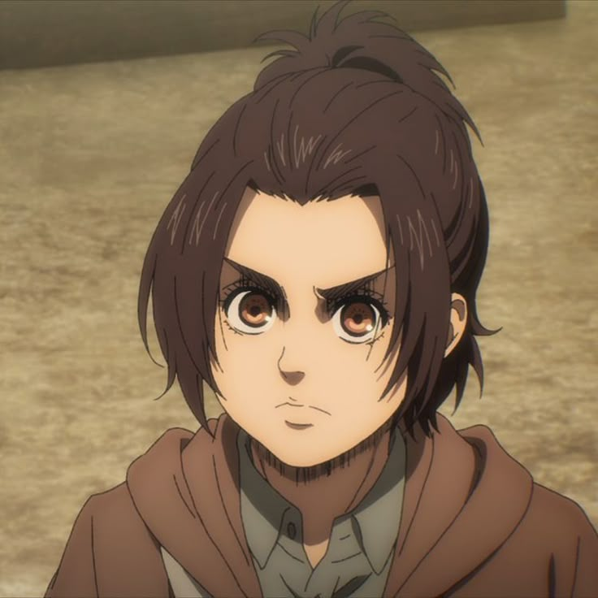
Gabi Braun
Gabi é uma jovem prodígio militar, extremamente determinada, barulhenta e cheia de si, que cresceu sob uma intensa lavagem cerebral nacionalista. Ela vê o exército como a única chance de provar ao mundo que seu povo merece respeito, canalizando um preconceito violento contra os habitantes das muralhas. Sua trajetória é um espelho invertido da infância de Eren; ao ser arrancada de sua zona de conforto e jogada no território inimigo, ela é forçada a encarar a humanidade daqueles que odiava, passando por um doloroso e violento processo de desconstrução de suas próprias crenças.
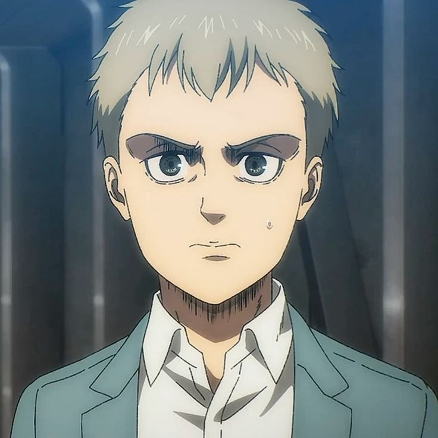
Falco Grice
Em total contraste com a agressividade de sua geração, Falco é um recruta gentil, empático e fisicamente mais fraco, que demonstra uma capacidade rara de enxergar o sofrimento humano em ambos os lados da moeda, mesmo antes de vivenciar a guerra de perto. Ele entra para o exército não por glória ou patriotismo, mas pelo desejo puro e protetor de poupar Gabi dos horrores do front e do destino cruel reservado aos guerreiros. Sua bondade e inocência acabam servindo como ponte para eventos cruciais que mudam o rumo do conflito internacional.